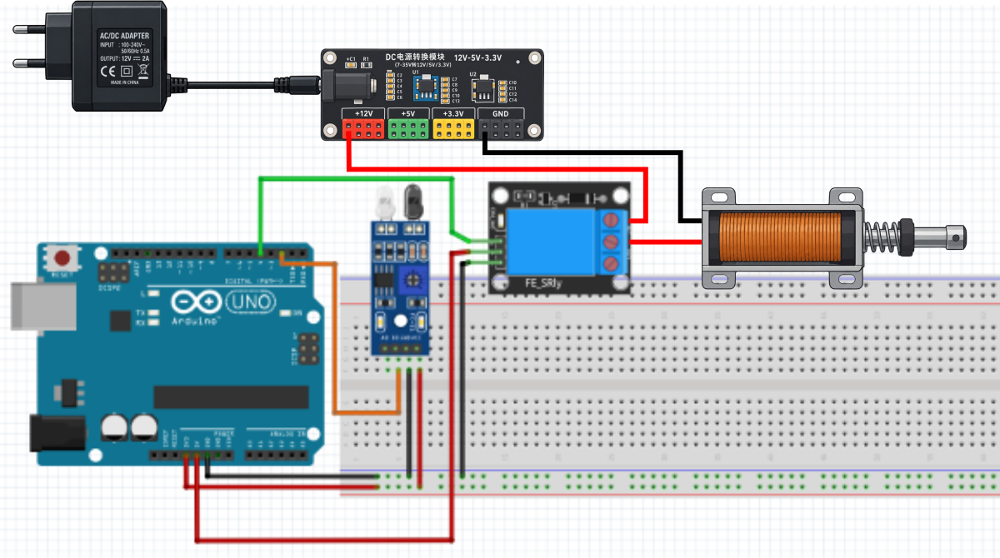

Praktik Penggerak Elektromekanis Aktuator
Kendali Linear Solenoid Berbasis Sensor IR & Touch Sensor
Pelajari cara mengontrol aktuator linear solenoid menggunakan modul relay dengan pemicu Sensor Infrared (IR) untuk otomatisasi objek dan Touch Sensor untuk kendali saklar sentuh ON/OFF secara presisi.
Skema Rangkaian
Skema Misi 1

Klik untuk perbesarSimulator Solenoid
OFF (Mati)
COIL 12V
MW
Plunger: Posisi Normal (Keluar)
Relay: LOW
Simulasikan Pemicu Sensor IR:
Pilih Misi Praktikum
2 Misi Utama
Misi 1: Kontrol Linear Solenoid Berbasis Sensor Infrared (IR)
Mendeteksi objek menggunakan modul sensor IR Obstacle. Jika objek terdeteksi, relay aktif dan menarik plunger solenoid selama waktu tertentu.
Arduino Uno
sketch_misi1_ir_solenoid.ino
Ready | SENSOR: PIN 2, RELAY: PIN 7
Arduino Uno on COM3
Serial Monitor (Simulasi Solenoid)
[Serial Monitor Siap. Klik "Upload & Run" untuk memulai]
Status: Connected @ 9600 baud